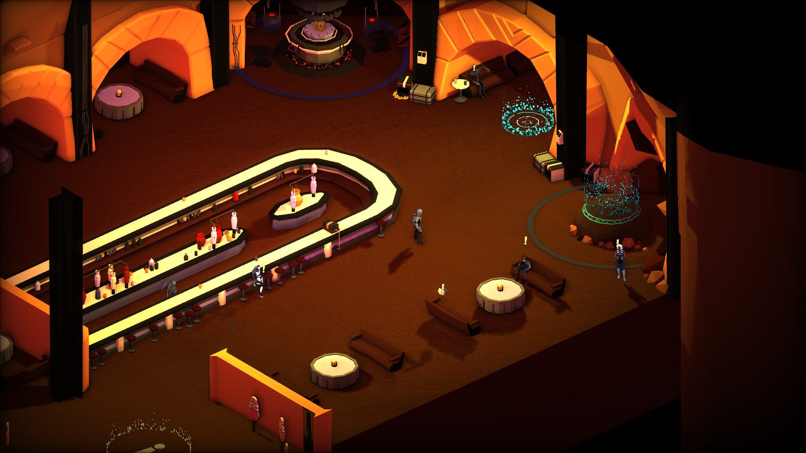
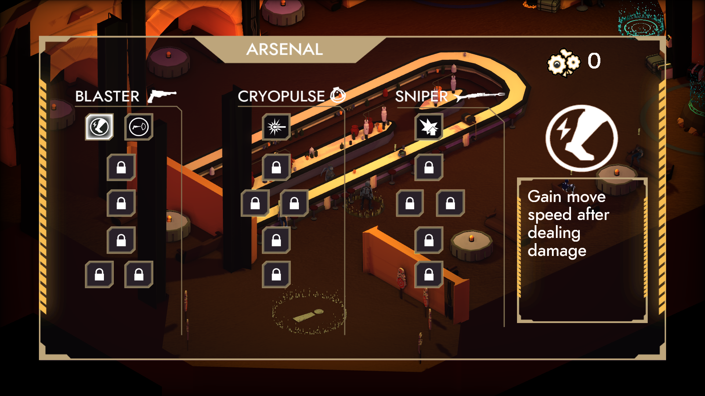

First implementations
Animation
In the first vertical I was in charge of the first implementation of skeletal animation. I also added tools to modify the duration of the animations directly in engine.

State Machine
I was in charge of making the first state machine for the main character. I was also in charge of making all the transitions between animations as responsive as possible, ensuring that the player had the best possible experience playing the game.

HUB
Setup
I was part of the first implementation of the HUB in the engine, preparing everything so that when we had the final artwork, it could be done quickly and effectively.

Social interaction
In this part I made sure that all the interaction with the HUB npc's worked as designed. Each NPC has its number of interactions available and has several upgrades to increase the level of friendship and as a consequence, a variety of dialogues.

Gameplay
Skill trees abilities
In the first phases I did the implementation of some of the first skills of the three blocks we have in the game.

Feedback and audio transition
For the game we needed the ambient music to live throughout the game so we could make transitions between scenes, so I created the system to make it easy to make music changes. I also incorporated the controller's vibration system into the game.

Water damage
In level two a new biome is introduced and with it, the frozen water, I was in charge of the implementation of the damage per second system, increasing its damage per second with its corresponding limitation.

Fade in and death animation
The player's death is an important moment in the game, so we gave it the necessary emphasis, implementing the death animation, a zoom and a fade-in, which we will use for all the transitions in the game..
Particle activations
In the game there are many interactions with the environment, moments in which the player must know what he can interact with, visual feedback was activated in all the interactions that can be done.
Pull coins
Enemies give an economic reward, since there are areas where there are enemies and you can not access, it was necessary to implement the attraction of coins to the player.


Bosses
Rancor
From the first boss, Rancor, I implemented two of his attacks, hand slam and projectile throw. Besides that I helped to polish Rancor's movement of his different attack transitions.

Wampa and Skel
From Wampa and Skel I programmed a part of Skel's state machine and his bounce attack, polishing some of his attacks and synchronizing animations.

Cinematic
One of my last tasks was to make a rework to the cinematics that we had, I proposed a system of sequences that allow you to chain several movements of the objects and thus be able to expand the system and have flexibility when expanding and editing the cinematic itself, this system was used to make the cinematic of the last boss.

Trailer and teaser
Trailer
For the trailer we decided to simulate the scenes we could in Unity and I was in charge of the implementation of animations of the characters that appear, of the different shots and movements that are inside Unity using Cinemachine.

Teaser
And as in the trailer, we also used Unity for the creation of the teasers and I collaborated with the same mentioned with the trailer but this time for the Bantha teaser.